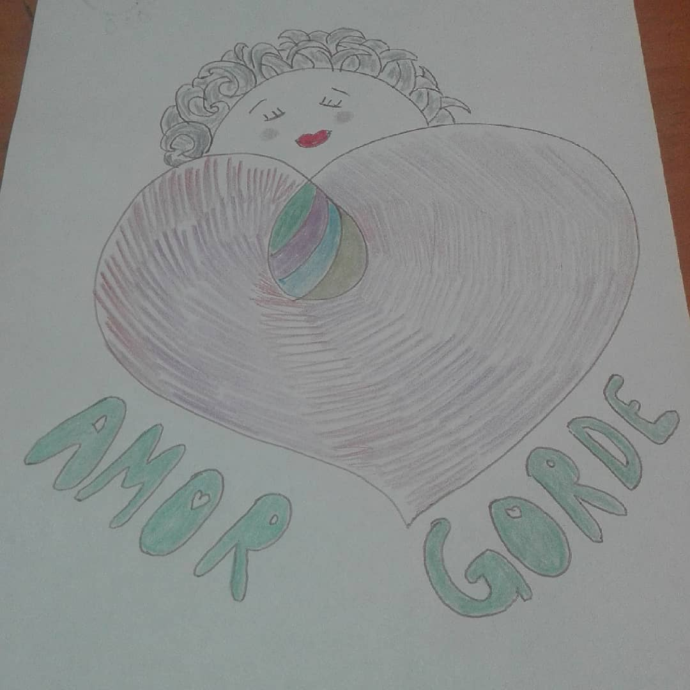

Este fue mi primer dibujo con perspectiva gorde. Surgió al escuchar la necesidad de resignificar el ser gorde. Empecé a leer libros de activismo gorde, a escuchar a algunes de sus referentes y siguieron cayendo fichas en mi ser. Todes en este mundo criticamos fuertemente nuestro cuerpo, y a los gordes se le agrega la opinión ajena. Cala hondo aunque nos hagamos les empoderades. Cuesta romper el patrón y nos decimos “más amor propio” como mantra entre otras frases pero entendí que… "EL FALSO EMPODERAMIENTO DE LAS FRASES MOTIVACIONALES NO ME INTERPELA" porque el trabajo individual es importante pero la realidad te golpea la cara. Es como cuando entendimos que nos depilamos no por gusto si no por imposición, pero ahí nos ves meta cera en el bozo. Podés entender que nos criaron con gordofobia y mirar las cosas con otra perspectiva, pero lo que realmente importa y alivia es (después del trabajo interno) hacer COMUNIDAD juntarse con tus amigues para cuestionar, debatir la cultura de la gordofobia aportando ideas para desarmarla. Que no quede nada de gordofobia o más bien gordo-odio en este mundo. Que solo quede el AMOR GORDE.